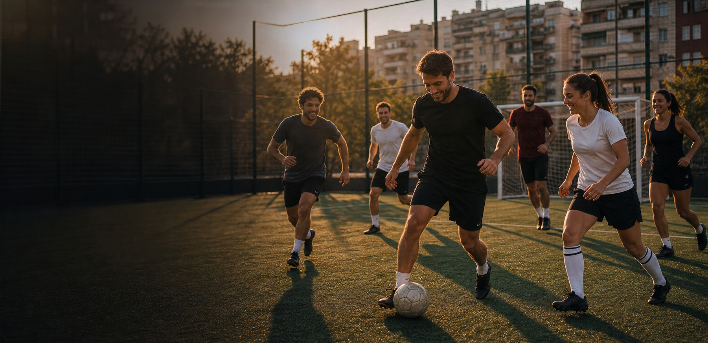
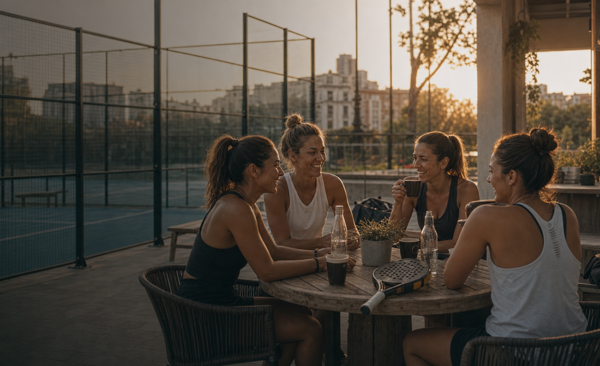
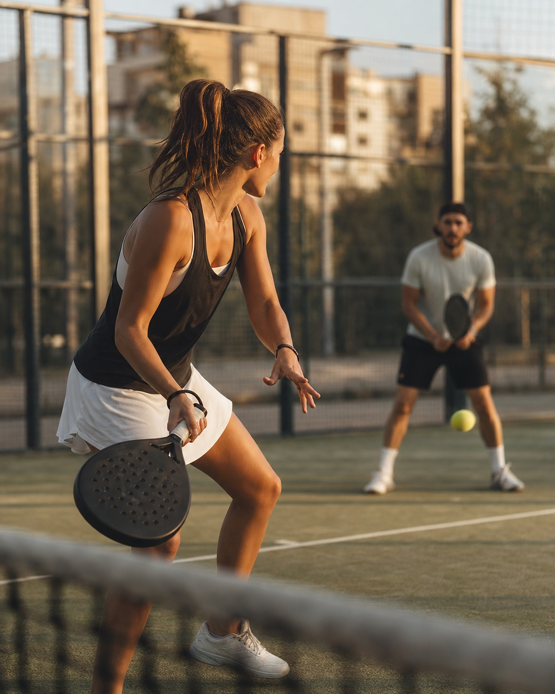
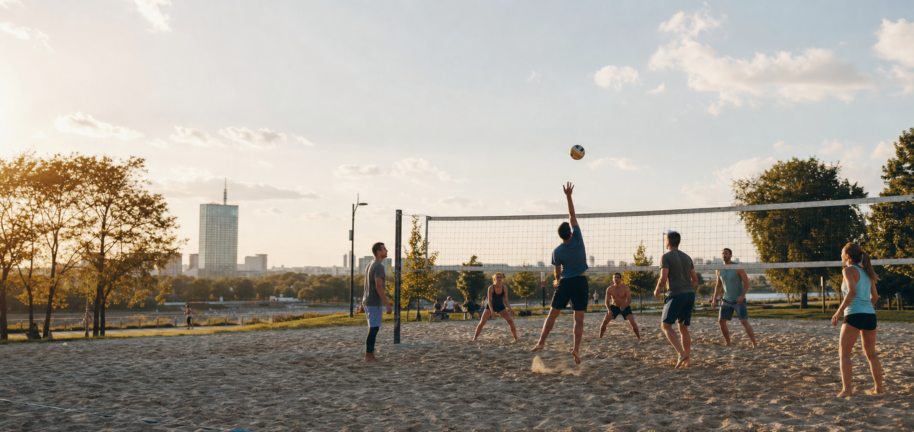

Выбираешь игру
Футбол, падел или пляжный волейбол. Уровень понятен, слот уже собран.
Belgrade sport community
Игры · группы · встречи
PlayUp — это не про медали и не про форму в зеркале. Это про неделю, в которой есть движение, люди и повод выйти из дома.
Выбери направление

общие группы Футбол Игры с равными, поле забронировано, состав собран.
girls only Женский падел Безопасная среда, комфортный уровень и кофе после игры.
общие группы Падел Регулярные игры, понятный темп и люди, к которым хочется вернуться.
общие группы Пляжный волейбол Песок, команда твоего уровня и общий стол после игры.Футбол, падел или пляжный волейбол. Уровень понятен, слот уже собран.
Мы собираем игры, пробежки и встречи так, чтобы можно было прийти без своей компании.
После игры тебя ждут на кофе. Со временем эти лица становятся знакомыми.
PlayUp — своё коммьюнити в городе.